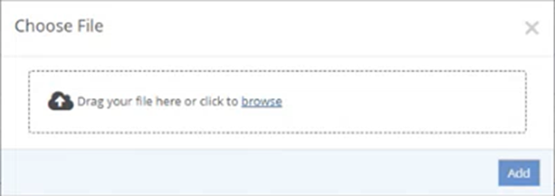
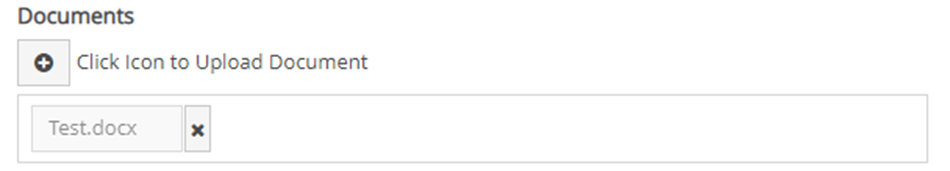

Documents for the IncidentApp are stored in the Documents library in the main application in the folder EII-Incidents. Users must have permission on the document folder to upload or to view documents.
Documents may be attached to the workflow at any stage in the process if a button is provided on the form to do so.
Documents can be attached:
By using the browse function
By clicking and Dragging files from a File Explorer window
Attach Documents
Select the Upload Documents icon. The Choose File window opens.

Do one of the following:
Click Browse, search for and select one or more documents, and click Open. The selected document are displayed on the Choose File window as a list.
Click and drag the document(s) into the Choose File window.
One you have added all the document you want to, click Add. A button will display on the page for each document with the name of the document. You can add more documents as needed. Click X to remove a document.

Once the form is saved the documents will be uploaded.
View a Document
Click the icon for the document in the form.
Choose Open or Save.
Documents are stored in the Documents library in the main application in a folder whose name is configured in the Advanced Workflows (WAB) app configuration file. Users must have permission on the document folder to upload or to view documents.